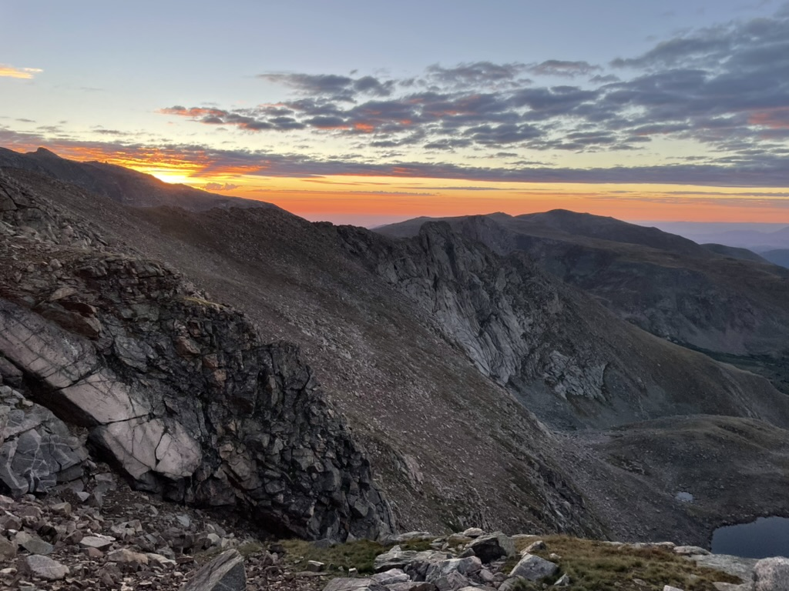

Chapter 8: Hear Me, Suzerain of the Domain

The landscape has become completely barren. Only the hardiest plants can grow up here.
The cusps you have been using
to traverse the domain are becoming too precarious to continue.
In your exhaustion and solitude, you witness malignant shapes and sounds emanating from the darkness below. You are not sure
if they truly exist. Why does your path have to be this desolate? Where did all of your fellow
trailblazers go?
You believe you are tasked with determining some sort of order from the domain.
You have no real idea of what you are supposed to solve. You're not
sure why you are here.
You come to the edge of a precipice. One of the voices whispers to you, "Your path
has been forsaken."
You backtrack along the ridge. You climb down into the valley and up to the neighboring ridge. You
attempt to continue along the ridge, meeting another precipice. "Your path has been forsaken."
Not being one to give up easily, you try the neighboring ridge.
"Your path has been forsaken."
"Your path has been forsaken."
"Your path has been forsaken."
"Your path has been forsaken."
You fall to your knees. "What do you want from me?"
As the darkness grows, you move towards the shapes and sounds. Every step you take takes
you further down. You do the only thing you can do, hang on to your tools for
dear life, and continue on into the darkness.
Chapter 9: Come from the Darkness. Tilt at the Fields.
Title Page